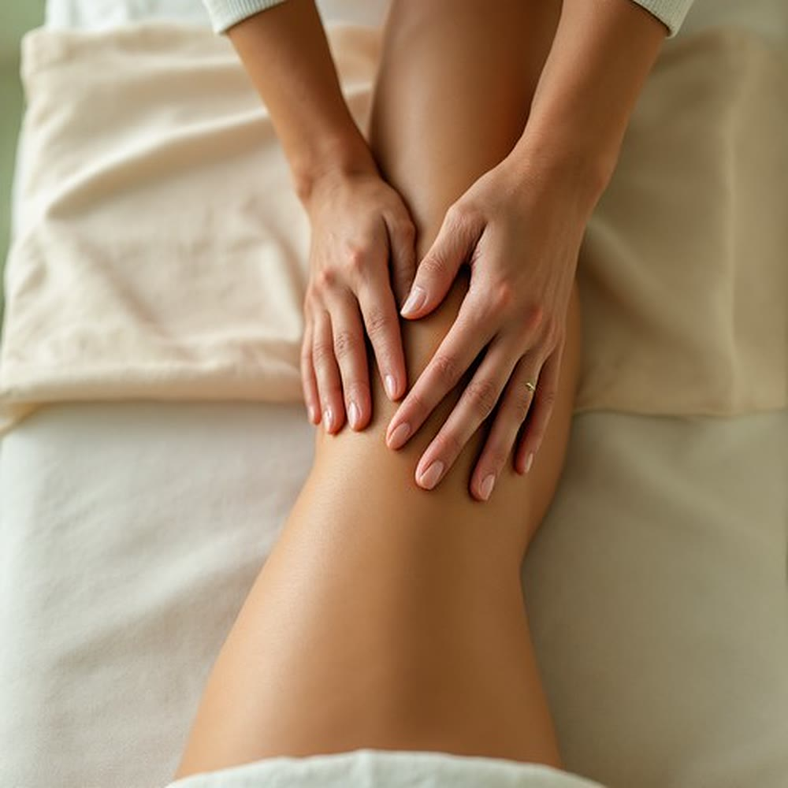

Body treatments · Jeżyce, Poznań
Firm, contouring work on the thighs, buttocks and stomach - where cellulite shows most often. The treatment boosts circulation in the skin and the tissue beneath it, and the result builds over a series, not one visit. Studio in Jeżyce, ul. Zeylanda 3/1.

What it is
Anti-cellulite massage is manual work: kneading, rolling and rhythmic holds on the thighs, buttocks and stomach. Unlike lymphatic drainage, which we do very lightly, the pressure here is clear - the aim is to boost circulation in the skin and the tissue beneath it, not just to move fluid.
The treatment supports firmer, better-looking skin, but it does not remove fat and does not replace exercise or a change in habits. With established cellulite a real result comes from a series: usually 6–10 treatments, twice a week at first, then less often.
Benefits
The most common reason for a visit. We work where the skin is uneven and the tissue is dense.
Firmer work boosts circulation. If swelling is the main issue, gentle lymphatic drainage is often a better choice.
Massage adds to activity and habits, it does not replace them - and it works best together with them.
A single visit gives better circulation and a feeling of lightness. Only regular sessions work on how the skin looks.
How it works
We ask about varicose veins, thrombosis, heart and kidney conditions, pregnancy, and whether any swelling appeared suddenly.
We agree what we work on: thighs, buttocks, stomach or arms. That decides whether 60 minutes is enough or 80 is better.
Kneading, rolling and rhythmic holds, with pressure matched to what you can comfortably take. The skin may stay red for a while afterwards.
Please drink water and take a short walk - staying still right after the treatment wastes part of the effect.
Time and price
The longer session gives room for a larger area or a calmer pace; we agree the scope on the spot. Eighty minutes costs the same as the option with pressotherapy - if you also have swelling, it is worth comparing the two.
Contraindications
Swelling that appeared suddenly, affects only one leg, or comes with pain and redness needs a doctor first, not a massage. With heart or kidney conditions and after a past thrombosis we decide after talking to you - tell us about them before your visit.
FAQ
It is clearly firmer than a relaxing massage and can feel unpleasant where the tissue is dense, but it should not be painful. We adjust the pressure to you. Red skin for a while after the treatment is normal.
No. It is not a weight-loss method and cannot replace a calorie deficit or exercise. It works on the skin, the tissue beneath it and circulation, not on body weight.
With established cellulite a real result comes from a series of 6–10 treatments, twice a week at first, then less often. A single visit mainly gives better circulation and a feeling of lightness.
We do drainage very lightly, because the lymph vessels run just under the skin, and it targets fluid outflow. Anti-cellulite massage is firmer and contouring. If swelling dominates, start with drainage; if it is uneven skin, start with anti-cellulite massage.
Yes, we have a separate option: 80 minutes of massage with pressotherapy for 240 zł - the same price as the 80-minute massage on its own.
Book online · We speak English
Most foreign guests message us on WhatsApp - write in English and we will reply in English.
Contact · Booking · We speak English
We use necessary cookies to make the site work. With your consent we would also like to use Google Analytics to see which pages are useful. You can change your choice at any time. Details in our privacy policy (in Polish).
Needed for the site to work and to remember your choice. They cannot be switched off.
Google Analytics - aggregated visit statistics. Off by default.